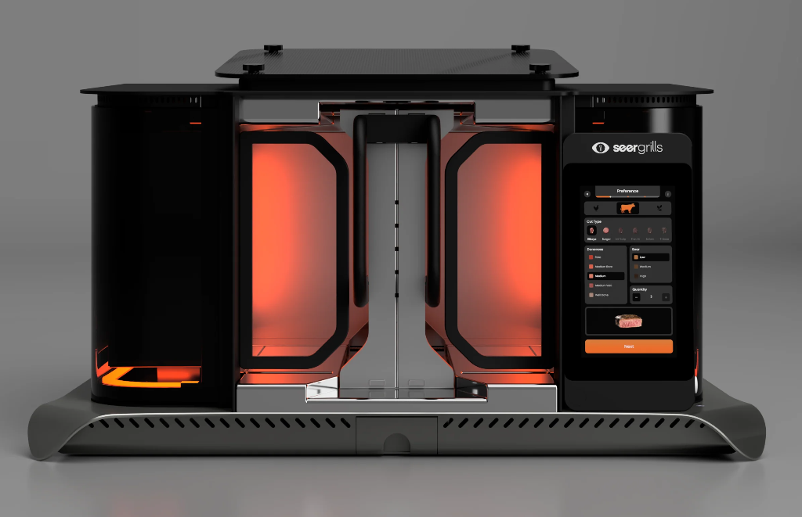

An AI grill that cooks faster than your guests arrive.

Grilling used to be simple: you light fire, you guess, you flip, you panic, you declare it “done” and hope nobody dies. SEERGRILLS looked at that process and thought, “What if the grill did the guessing?” Their flagship grill, the Perfecta, is basically the pitch of an AI kitchen appliance taken to its natural conclusion: you tell it what you’re cooking and how you want it done, and the machine handles the heat control and timing for you. Official site here: seergrills.com .
The Perfecta cooks differently than a normal grill. Instead of heat coming up from below and forcing you to babysit it, it uses a vertical setup with high-heat infrared cooking so food gets blasted from multiple sides at once. That means no constant flipping, no “which side is hotter,” and fewer moments where you stare at a steak like it’s a complicated math problem. You pick your doneness, the grill does its thing, and in theory you end up with consistent results, even if your personal cooking style is usually “vibes and prayers.”
Of course, an AI grill is also a statement. Not just “I like cooking,” but “I would like cooking to be more like pressing
a button on a futuristic food machine.” For some people that’s perfect. For others, part of grilling is the chaos, the timing
drama, and the ability to blame the wind. Either way, it’s hard not to respect the ambition of a product that basically says:
“Relax. The grill has this.” Watch it here:
youtube.com/watch?v=7HnJo0msx6w